Préparer et conduire l’étude de La Tour de Garde dans les temps
Version 4.0 · novembre 2026
⚠ Deux mises en garde importantes
Conduis toujours avec la publication originale. L’application affiche les paragraphes et les questions uniquement pour calculer les temps. Le conducteur ne doit jamais se fier au contenu affiché dans le minuteur : pour présenter les informations à l’auditoire, utilise toujours l’application JW Library ou la revue La Tour de Garde imprimée.
Pendant l’étude, utilise le mode présentation. C’est la façon recommandée d’utiliser le minuteur pendant que tu conduis, car il évite les distractions : il n’affiche que l’essentiel, avec les couleurs vert, jaune et rouge pour voir d’un coup d’œil où tu en es avec le temps, et de grands boutons faciles à toucher pour passer au paragraphe suivant et compter les commentaires (section 9).
Le Minuteur d’étude aide le frère qui conduit l’étude de La Tour de Garde à bien répartir le temps et à finir à l’heure.
Tu charges l’article de la semaine en PDF et l’application :
lit l’article et repère les paragraphes, les questions, les versets à lire, les images, les notes et les questions de révision ;
calcule le temps à consacrer à chaque partie : introduction, chaque paragraphe, révision et conclusion ;
te guide pendant l’étude avec un chronomètre par paragraphe et des couleurs qui indiquent si tu es dans les temps, dans la tolérance ou en dépassement ;
se réajuste toute seule : si un paragraphe s’allonge, elle répartit le temps restant entre les suivants pour que tu finisses à l’heure.
Application non officielle. C’est un projet gratuit et indépendant. Ce n’est pas une publication officielle et elle n’a aucun lien avec jw.org ni avec l’organisation des Témoins de Jéhovah. L’article est analysé sur ton propre appareil : il n’est ni envoyé ni enregistré sur un serveur.
Les images de ce mode d’emploi utilisent un article d’exemple inventé, pas un véritable article de La Tour de Garde.
2Installer l’application
L’icône de l’application est un livre orange avec un cadran de couleurs (vert, jaune et rouge) sur fond noir.
Si tu utilises déjà l’application dans le navigateur sur un appareil Android, l’écran d’accueil affiche la carte verte « Tu utilises Android ? » avec le bouton « Ouvrir dans Google Play ».
iPhone et iPad
Elle n’est pas encore sur l’App Store, mais elle fonctionne aussi bien depuis le web :
Appuie sur le bouton Partager (le carré avec une flèche vers le haut).
Choisis « Sur l’écran d’accueil » et appuie sur Ajouter. L’icône apparaîtra sur ton écran.
Ordinateur
Ouvre temporizador-estudio.vercel.app dans Chrome ou Edge. Si tu veux, installe-la comme un programme avec l’icône d’installation de la barre d’adresse.
Mises à jour : quand il y a une nouvelle version, un message apparaît avec le bouton Mettre à jour. L’application ne se met jamais à jour toute seule au milieu d’une étude.
3L’écran d’accueil
C’est la première chose que tu vois en ouvrant l’application. Les chiffres rouges de l’image montrent où se trouve chaque chose.
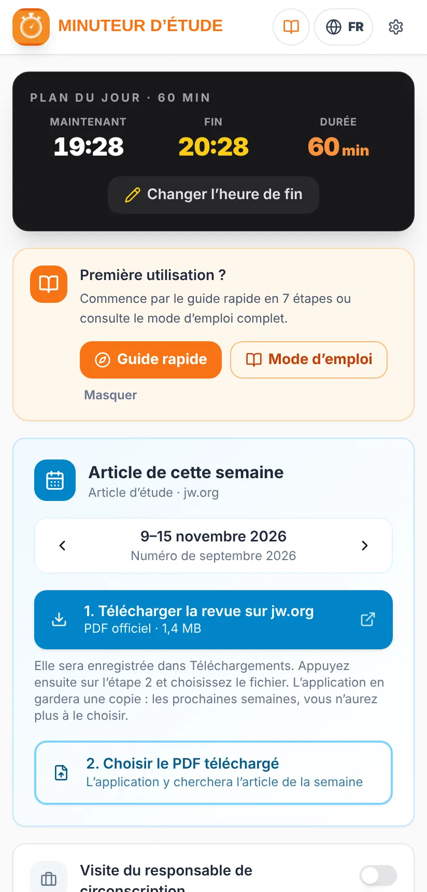
Écran d’accueil.
Bouton du livre : ouvre ce mode d’emploi à tout moment.
« Première utilisation ? » : ouvre le guide rapide ou ce mode d’emploi. Quand tu connais l’application, appuie sur Masquer.
« Tu utilises Android ? » (seulement sur les téléphones Android qui utilisent le navigateur) : installe l’application depuis Google Play. Cette carte peut aussi être masquée.
Plus bas, tu trouveras :
Programme du jour : l’heure actuelle, l’heure à laquelle l’étude se termine et sa durée.
Article de cette semaine : pour télécharger la revue et l’ouvrir (section 4).
Visite du responsable de circonscription : l’interrupteur pour l’étude de 30 minutes (section 13).
Réglages de l’étude : un résumé de tes réglages, avec le lien Modifier.
Tout en bas, les liens vers la confidentialité, le mode d’emploi, Google Play et l’historique des études.
En haut se trouvent aussi la langue (FR) et les réglages⚙.
4Charger l’article de la semaine
La carte « Article de cette semaine » affiche la semaine actuelle (par exemple, 9-15 novembre 2026) et le numéro de La Tour de Garde qui la contient. Avec les flèches ‹›, tu peux choisir une autre semaine.
« 1. Télécharger la revue sur jw.org » ouvre le PDF officiel du numéro correspondant. Sur Android, il est enregistré dans Téléchargements ; sur iPhone, touche Partager → « Enregistrer dans Fichiers ».
« 2. Choisir le PDF téléchargé » : sélectionne ce fichier. L’application cherche dans la revue l’article de la semaine choisie et l’analyse. Après avoir touché l’étape 1, quand tu reviens dans l’application ce bouton devient vert (« Téléchargé ? Touchez ici pour l’ouvrir ») : un seul toucher suffit.
La Tour de Garde est téléchargée dans la langue de l’application. Si l’application est en français, c’est l’édition française qui est téléchargée ; si elle est en anglais, l’édition anglaise, et ainsi de suite pour chaque langue. Pour télécharger une autre langue, change d’abord la langue de l’application (section 14). En portugais, c’est l’édition du Portugal ou celle du Brésil qui est téléchargée, selon ton choix.
L’application garde une copie de la revue. Les semaines suivantes du même numéro s’ouvrent directement avec « Ouvrir l’article de cette semaine », sans rien retélécharger. Les revues enregistrées s’effacent toutes seules 3 mois après leur dernière semaine.
Sur ordinateur, tu peux aussi glisser le PDF n’importe où sur l’écran d’accueil (le message « Déposez ici le PDF de La Tour de Garde » apparaît) ou choisir le dossier où tu ranges les revues : l’application les trouvera toute seule.
Elle dit que la revue n’est pas encore publiée ? jw.org publie chaque numéro quelques semaines à l’avance. Si tu choisis une semaine très éloignée, elle n’est peut-être pas encore disponible.
5Le résumé et le programme de l’étude
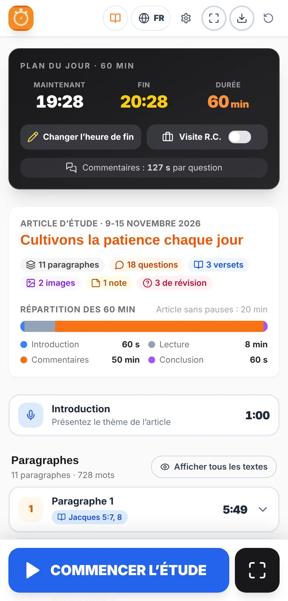
Le programme du jour.
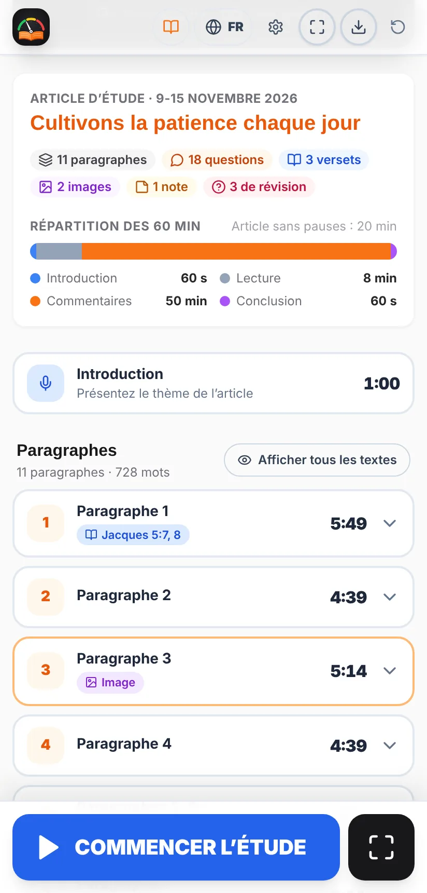
Le résumé de l’article.
Heure de fin : l’heure à laquelle l’étude se termine.
« Changer l’heure de fin » : à utiliser quand le discours public se termine en retard (voir l’encadré ci-dessous).
Quand changer l’heure de fin ? La réunion dure 1 heure 45 : cantique et prière (5 min), discours public (30 min), cantique (5 min), étude de La Tour de Garde (60 min) et cantique et prière de fin (5 min).
Si le discours se termine en retard, ces minutes sont prises sur l’étude de La Tour de Garde. Avant de commencer l’étude, appuie sur « Changer l’heure de fin » et indique l’heure à laquelle l’étude doit se terminer pour que la réunion finisse à l’heure (5 minutes avant la fin, pour le cantique et la prière). Tout est recalculé pour finir à cette heure-là.
Si le discours se termine à l’heure ou en avance, ne change rien : l’étude dure ses 60 minutes et la réunion peut se terminer un peu plus tôt, mais jamais plus tard. C’est pourquoi l’application n’allonge jamais l’étude au-delà du temps réglé.
En dessous, le résumé de l’article indique :
le titre et la semaine ;
combien de paragraphes, questions, versets, images et notes il contient ;
une barre de couleurs avec la répartition du temps : IntroductionLectureCommentairesConclusion.
Le programme indique aussi « Commentaires : X s par question » : le temps moyen pour répondre à chaque question.
Si l’article ne tient pas dans le temps choisi, un avertissement apparaît. Tu peux allonger la durée ou choisir une lecture plus rapide dans les Réglages.
6La liste des paragraphes
Chaque paragraphe apparaît sur une ligne avec son numéro et son temps prévu. Appuie sur un paragraphe pour l’ouvrir.
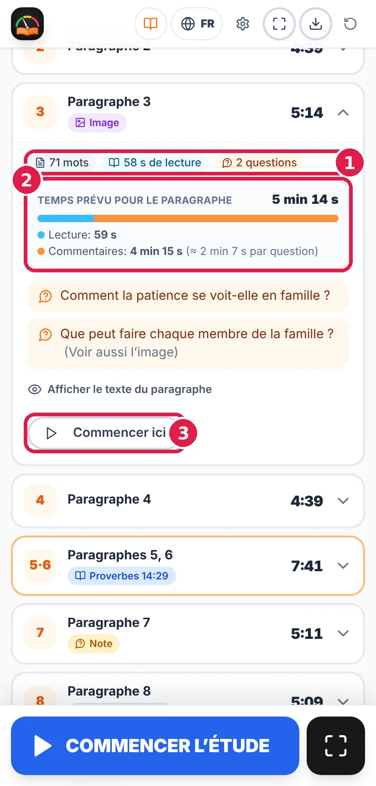
Un paragraphe ouvert.
Données du paragraphe, chacune avec sa couleur : mots (gris), temps de lecture (bleu) et questions (orange). Pendant l’étude, l’horaire prévu apparaît aussi (violet).
Temps prévu pour le paragraphe : le total et sa répartition. La barre montre la lecture du paragraphe (bleu), les commentaires (orange) et, pour les paragraphes longs, un supplément pour plus de commentaires (vert). S’il y a un verset à lire, une image ou une note, c’est l’assistance qui le commente : il apparaît dans les commentaires, sous les questions (par exemple « Verset à lire : 35 s »). Les parties additionnées donnent le total.
« Commencer ici » : si l’étude a déjà commencé (par exemple si tu arrives en retard), va directement à ce paragraphe.
Les étiquettes de couleur indiquent ce qu’il faut garder à l’esprit :
Étiquette
Signification
Jacques 5:7, 8
Il y a un verset à lire.
Image
La question parle d’une image de l’article.
Note
Il y a une note à commenter.
★ Point clé
La question mentionne un encadré ou une idée entre guillemets.
Avec « Afficher le texte du paragraphe », tu peux lire le texte pour préparer les temps. Pour diriger, utilise toujours la publication originale.
Les paragraphes qui ont la même question (par exemple « 5, 6 ») vont ensemble, et le bouton Suivant passe tout le groupe.
7Diriger l’étude pas à pas
Conseillé : pendant l’étude, utilise le mode présentation (section 9). On explique ici comment cela fonctionne ; c’est pareil dans les deux vues.
Sur le téléphone, les boutons principaux sont toujours en bas :
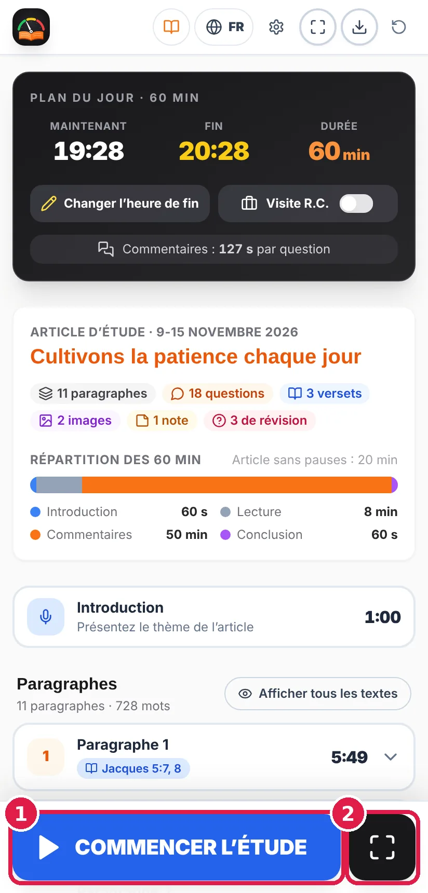
Avant de commencer.
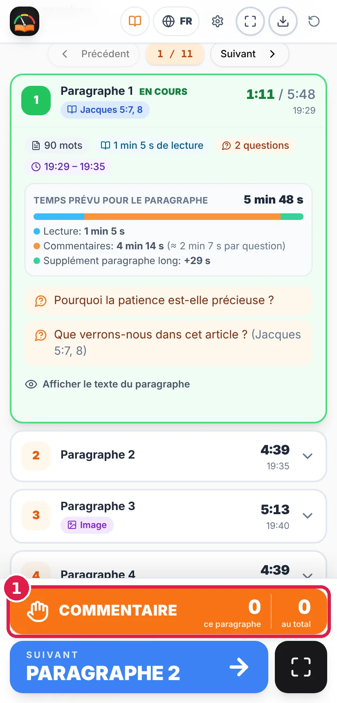
Pendant un paragraphe.
Grand bouton bleu : il t’indique ce qui vient ensuite. Appuie dessus chaque fois que tu passes à une autre partie : Commencer l’étude → Paragraphe 1 → Paragraphe 2 → … → Révision → Conclusion → Terminer l’étude.
Bouton noir⛶ : ouvre le mode présentation.
Pendant les paragraphes, le bouton orange ✋ COMMENTAIRE apparaît aussi : appuie dessus chaque fois que quelqu’un commente. À la fin, tu verras combien il y a eu de commentaires.
Introduction. Appuie sur « Commencer l’étude ». Le chronomètre général et celui de l’introduction démarrent.
Paragraphes. Appuie sur Suivant au début de chaque paragraphe. Tu verras le temps écoulé sur le temps prévu (par exemple 1:11 / 5:43) et la couleur (section 8).
Questions de révision. Après le dernier paragraphe viennent les questions de l’encadré final.
Conclusion. Elle dure exactement le temps qui reste jusqu’à l’heure de fin : s’il reste du temps, elle l’utilise entièrement, même si c’est plus que la minute des Réglages, et s’il en reste moins, elle est raccourcie. Si l’heure de fin est dépassée, elle passe au rouge.
Terminer l’étude. Le chronomètre s’arrête et le rapport de l’étude est enregistré (section 15).
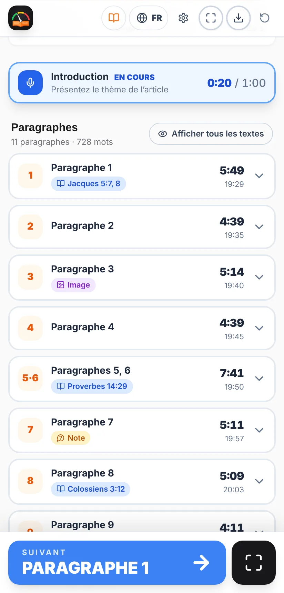
Introduction en cours.
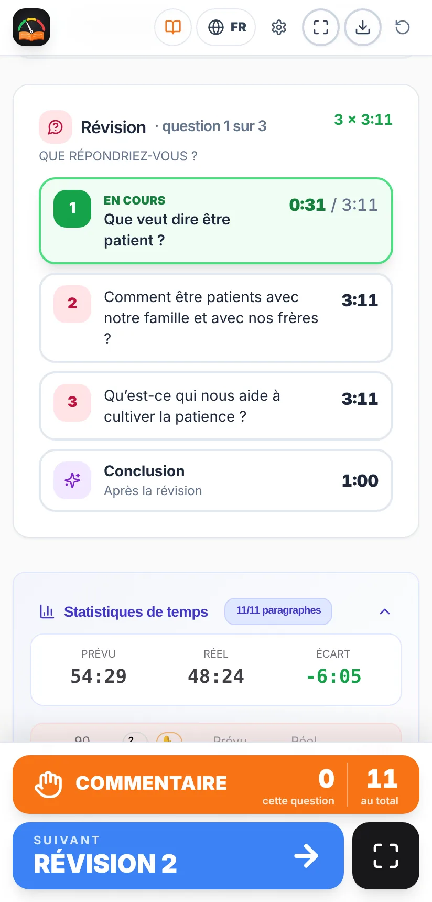
Questions de révision.
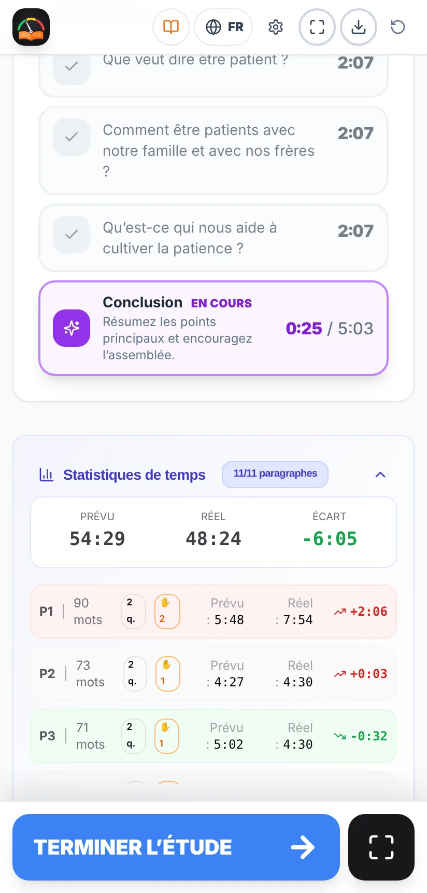
Conclusion.
Avec le bouton ⏸ du programme, tu peux mettre en pause le chronomètre en cas d’interruption. En pause, le chronomètre de la partie en cours s’arrête, mais l’heure de fin ne bouge pas : le temps restant continue de baisser, car la réunion se termine à l’heure.
8Les couleurs : vert, jaune et rouge
La carte de la partie en cours (paragraphe, introduction, question de révision ou conclusion) change de couleur selon le temps écoulé :
Couleur
Quand
Que faire
DANS LES TEMPS
Jusqu’au temps prévu.
Tout va bien : continue.
TOLÉRANCE
Le temps est dépassé, mais de 30 % au plus.
Commence à conclure les commentaires.
DÉPASSÉ
Plus de 30 % au-dessus du temps prévu.
Passe au paragraphe suivant.
Dans les temps.
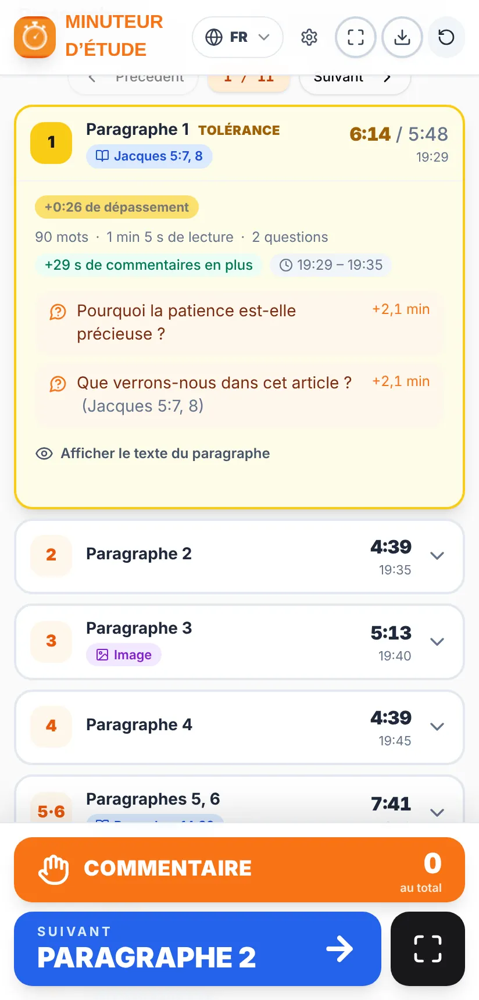
Tolérance, avec le temps de dépassement.
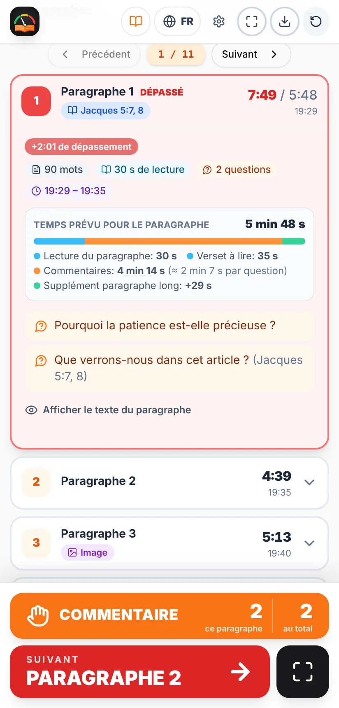
Dépassé.
Dans les 5 dernières minutes de l’étude, les paragraphes et les questions de révision n’ont pas de tolérance : ils passent directement du vert au rouge, pour ne pas empiéter sur le temps de la fin. La conclusion garde toujours sa tolérance.
Si une partie s’allonge, pas de problème : quand tu touches Suivant, l’application répartit à nouveau le temps restant entre ce qui reste, pour finir à l’heure.
Le bouton « Suivant » te prévient aussi
Quand la partie en cours passe au rouge, le grand bouton pour avancer change aussi, pour que tu le remarques sans le chercher :
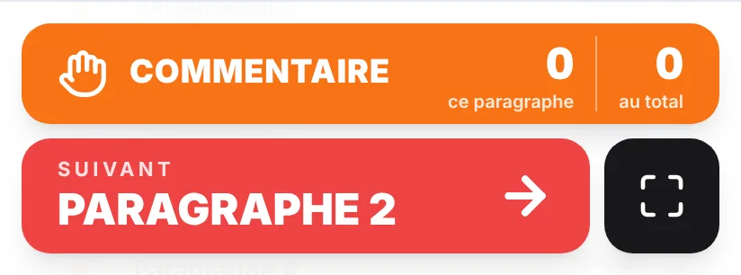
Rouge : on peut encore rattraper.
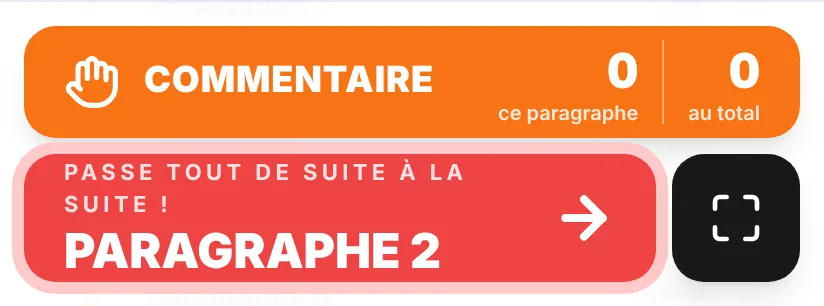
Clignotant : passe tout de suite à la suite.
Bouton rouge : la partie a dépassé son temps, mais on peut encore rattraper le retard sur la suite. Commence à conclure les commentaires.
Bouton rouge qui clignote avec « Passe tout de suite à la suite ! » : on ne peut plus rattraper le retard (il resterait moins de 30 secondes pour chaque question restante, ou tu es dans les 5 dernières minutes). Passe à la suite dès que possible.
En mode présentation, le bouton devient blanc avec des lettres rouges, pour bien se voir sur n’importe quelle couleur de fond.
Si tu n’en veux pas, désactive-le dans Réglages → Alertes → « Bouton « Suivant » rouge ».
9Le mode présentation
C’est la façon conseillée de diriger l’étude. Il n’affiche que l’essentiel, avec de grands textes et de grands boutons, et la couleur te montre d’un coup d’œil où tu en es avec le temps.
Il s’ouvre avec le bouton ⛶ en bas et se ferme avec la ✕ en haut (ou avec le bouton « retour » du téléphone, sans quitter l’application).
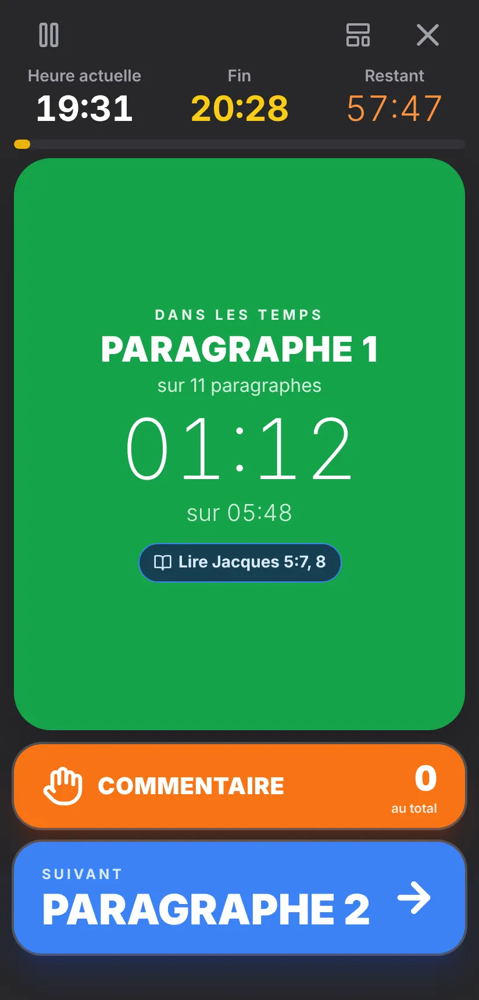
Le mode présentation pendant un paragraphe.
Cadre de couleur : où tu en es (par exemple Paragraphe 1), le chronomètre de cette partie et son temps prévu. Vert, jaune ou rouge selon le temps.
Commentaire : appuie dessus chaque fois que quelqu’un commente. À gauche, tu vois les commentaires de ce paragraphe (ou de cette question), et à droite le total.
Suivant : passe à la partie suivante. Le bouton indique ce qui vient ensuite.
En haut, tu vois à quelle heure l’étude a commencé, l’heure actuelle, l’heure à laquelle elle se termine et le temps restant.
Il y a trois présentations. Change-les avec le bouton ▦ en haut ou dans Réglages → Affichage :
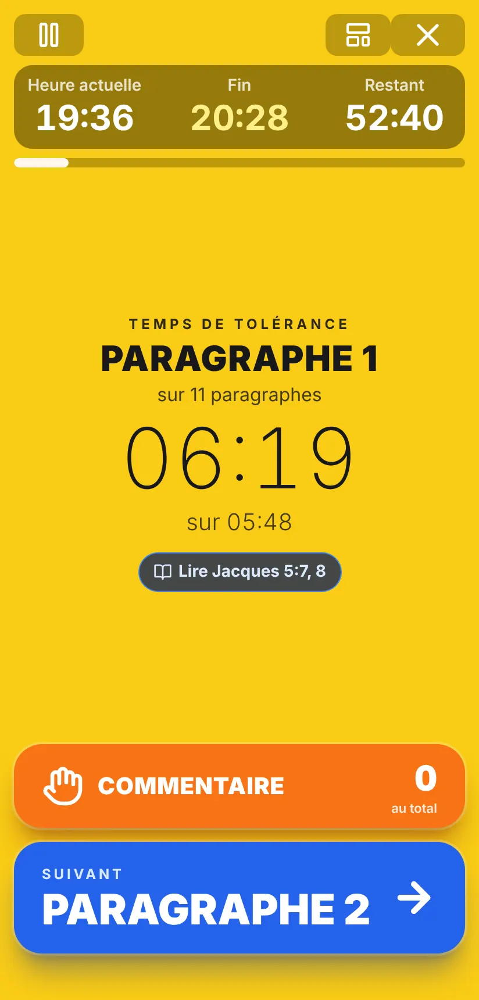
Feu tricolore : tout l’écran change de couleur.
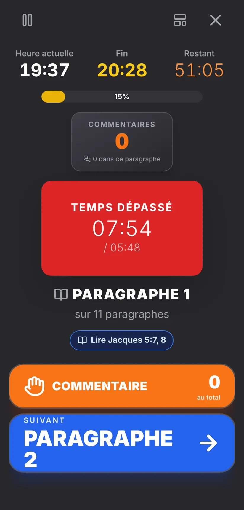
Classique : avec le compteur de commentaires.
À la fin, le grand bouton indique « Terminer l’étude », puis « Voir le rapport ».
10Comment les temps sont calculés
Lecture de chaque paragraphe = ses mots ÷ la vitesse de lecture (150, 180 ou 210 mots par minute). Chaque verset, image, note ou point clé ajoute en plus le temps par réponse (au moins 30 secondes ; 35 par défaut) comme commentaire, car c’est l’assistance qui le lit ou le commente.
L’introduction et la conclusion ont le temps des Réglages (1 minute chacune par défaut). La conclusion s’adapte à l’heure de fin : s’il reste du temps après la révision, elle le prend en entier ; s’il en reste moins, elle est raccourcie.
Commentaires : le reste du temps est réparti entre toutes les questions. Les paragraphes longs ou groupés reçoivent un peu plus (le « supplément » vert de la section 6).
Pendant l’étude : chaque fois que tu appuies sur Suivant, ce qui reste est recalculé pour finir à l’heure.
Exemple : pour une étude de 60 minutes avec 11 paragraphes et 21 questions, environ 7 minutes vont à la lecture, 2 à l’introduction et à la conclusion, et environ 51 aux commentaires : un peu plus de 2 minutes par question.
11Réglages
Touche ⚙ en haut à droite. Les réglages sont enregistrés sur ton appareil et répartis en quatre onglets :
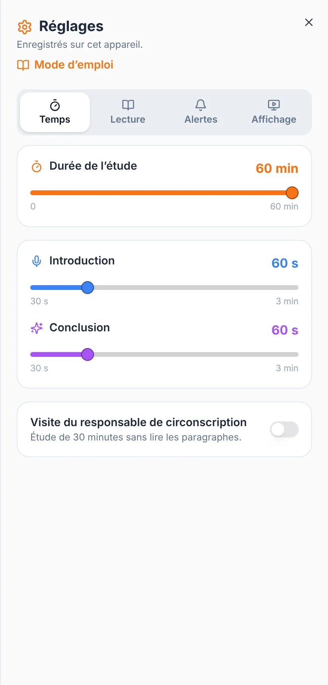
Temps
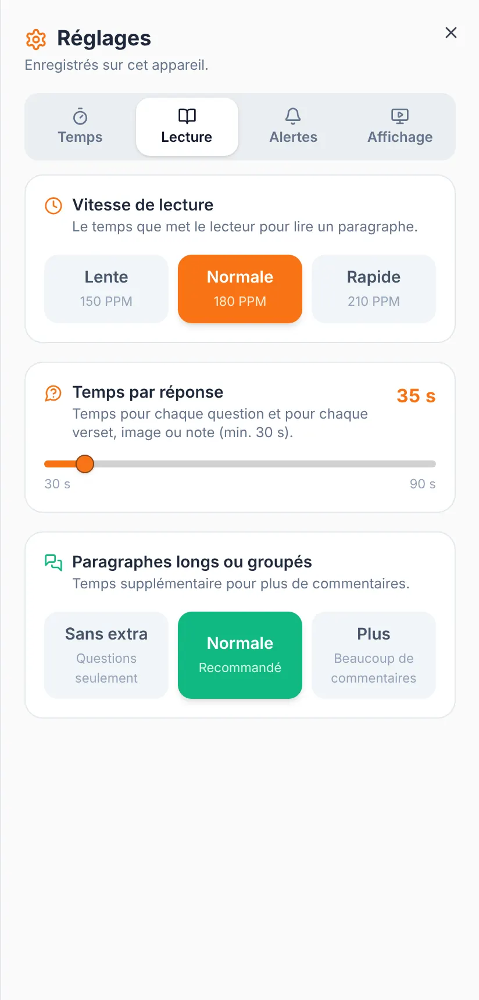
Lecture
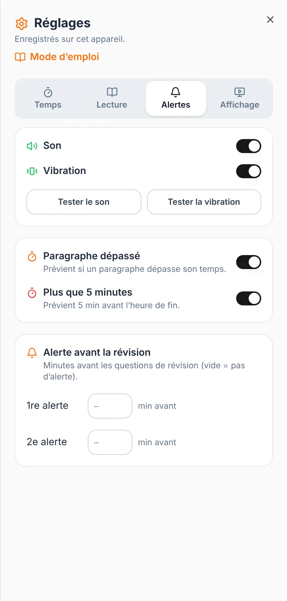
Alertes
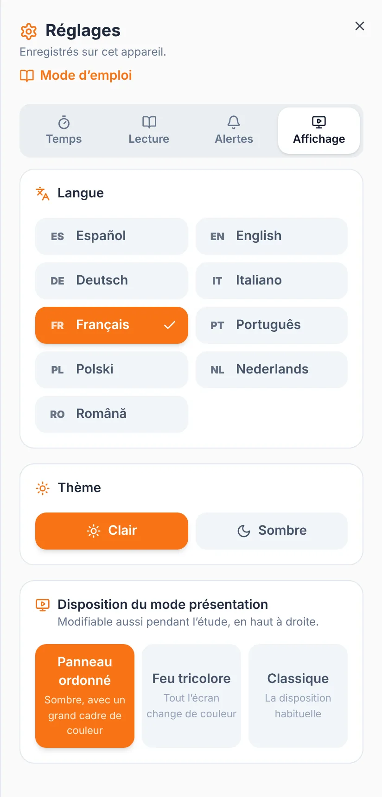
Affichage
Onglet
Ce que tu peux changer
Temps
Durée de l’étude (jusqu’à 60 min). Durée de l’introduction et de la conclusion (de 30 s à 3 min). Visite du responsable de circonscription.
Lecture
Vitesse de lecture du lecteur : Lente (150), Normale (180) ou Rapide (210 mots/min). Temps par réponse (de 30 à 90 s ; il sert aussi pour chaque verset, image, note ou point clé). Paragraphes longs ou groupés : Sans extra, Normal ou Plus de commentaires.
Alertes
Son et vibration (avec des boutons pour les tester). Alerte paragraphe dépassé, alerte « Plus que 5 minutes » et jusqu’à deux alertes avant la révision.
Affichage
Langue, thème clair ou sombre (avec quatre variantes sombres) et la disposition du mode présentation.
Si tu changes la vitesse de lecture ou le temps par réponse pendant l’étude, la modification s’appliquera à l’étude suivante.
12Alertes sonores et vibrations
Paragraphe dépassé : retentit quand le paragraphe en cours dépasse son temps.
Plus que 5 minutes : 5 minutes avant l’heure de fin, avec son, vibration et un message à l’écran.
Avant la révision : indique combien de minutes avant les questions de révision tu veux une alerte (par exemple 10 et 5). Laisse vide si tu n’en veux pas.
Peu de temps pour la révision : s’il reste moins de 20 secondes par question de révision, l’application te prévient.
Bouton « Suivant » rouge : le bouton pour avancer devient rouge quand une partie dépasse son temps et clignote quand on ne peut plus rattraper le retard (section 8).
Vérifie que le téléphone n’est pas en mode silencieux si tu veux entendre les alertes. La vibration fonctionne sur Android ; sur iPhone, cela dépend du navigateur.
13Visite du responsable de circonscription
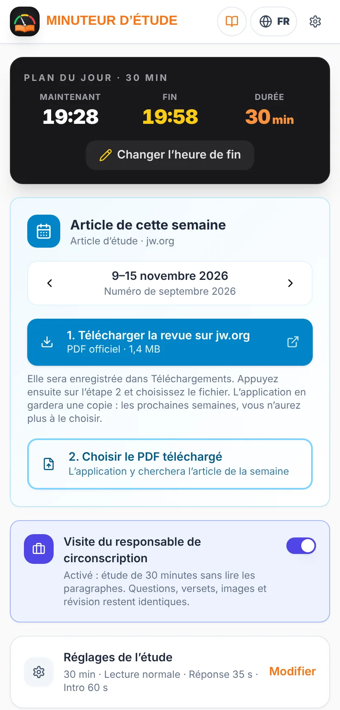
Interrupteur activé : étude de 30 minutes.
La semaine de la visite, active l’interrupteur « Visite du responsable de circonscription » sur l’écran d’accueil (ou dans Réglages → Temps). L’étude dure alors 30 minutes et les paragraphes ne sont pas lus : les questions, les versets, les images et la révision restent. Pense à le désactiver après la visite.
Cette semaine-là, les paragraphes ne sont pas lus. Dans le temps prévu de chaque paragraphe, les versets à lire, images et notes apparaissent dans les commentaires, par exemple « Verset à lire » ou « Image à commenter » (au pluriel s’il y en a plusieurs).
14Langues
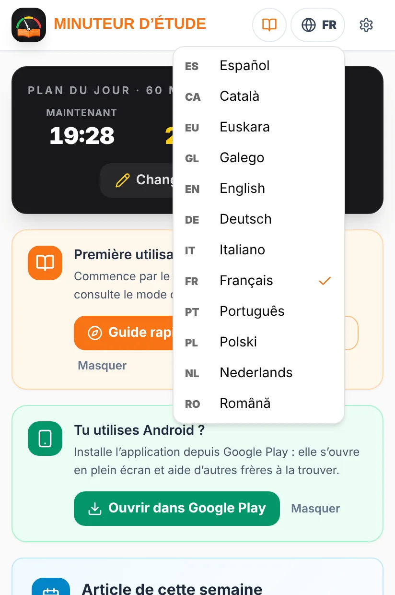
Menu des langues.
L’application fonctionne en espagnol, catalan, basque, galicien, anglais, allemand, italien, français, portugais, polonais, néerlandais et roumain. Change de langue avec le bouton du globe, en haut, ou dans Réglages → Affichage. Quand tu changes de langue :
toute l’application s’affiche dans cette langue, avec ses dates et ses heures ;
le bouton jw.org télécharge La Tour de Garde dans cette même langue. C’est la langue de l’application qui décide de la langue de la revue ;
en portugais, l’application demande une fois si tu préfères l’édition du Portugal ou celle du Brésil. Tu peux la changer ensuite dans Réglages → Affichage.
Ce mode d’emploi est disponible dans toutes ces langues : utilise les boutons de langue en haut de la page.
15À la fin : le rapport et l’historique
Quand tu appuies sur « Terminer l’étude », l’application enregistre un rapport avec les temps de chaque partie. Il t’aide à voir ce qui a duré trop longtemps et à faire mieux la fois suivante.
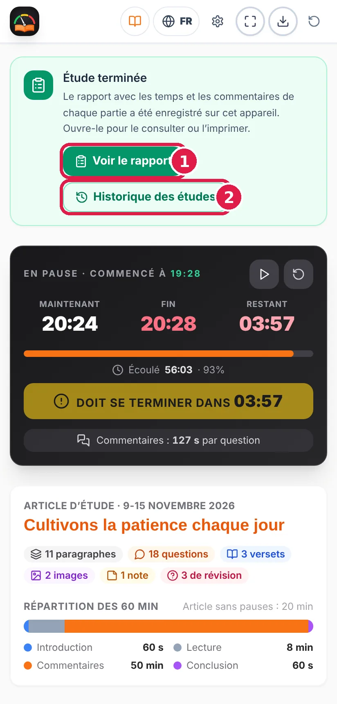
En haut apparaît la carte « Étude terminée ».
Voir le rapport : ouvre le rapport de cette étude dans un onglet séparé.
Historique des études : ouvre la liste de toutes les études enregistrées.
Le rapport
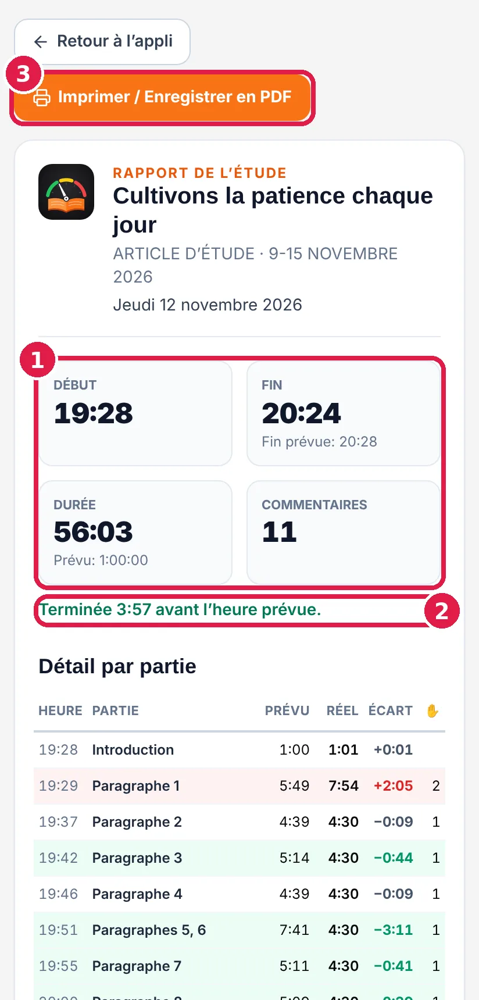
Haut du rapport.
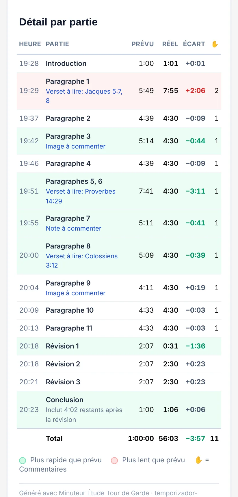
Le tableau avec chaque partie.
Début, fin et durée de l’étude, avec l’heure de fin prévue et le total des commentaires.
Résumé en une phrase, par exemple « Terminée 3:57 avant l’heure prévue » (en vert) ou « après » (en rouge).
Imprimer / Enregistrer en PDF : pour l’imprimer sur papier ou l’enregistrer comme fichier.
Le tableau a une ligne pour chaque partie : introduction, chaque paragraphe, chaque question de révision et conclusion. Sur chaque ligne, tu verras :
l’heure à laquelle cette partie a commencé ;
Prévu et Réel : le temps du programme et le temps vraiment utilisé ;
Écart : en vert si c’était plus rapide et en rouge si c’était plus long ;
✋ : les commentaires marqués.
Sur ordinateur et à l’impression, les mots et les questions de chaque paragraphe apparaissent aussi. Le rapport imprimé tient sur une seule page.
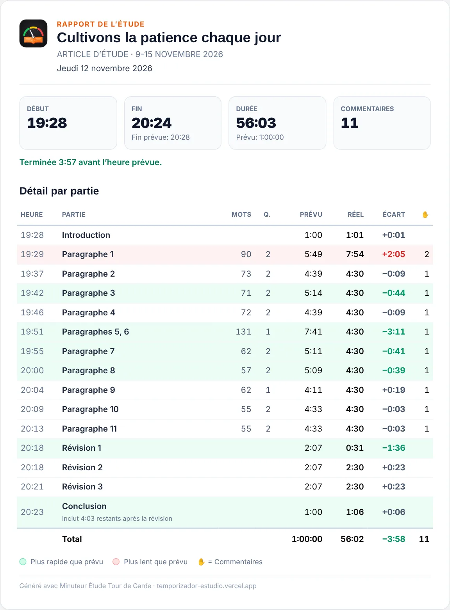
Le rapport complet, tel qu’il apparaît sur ordinateur ou imprimé.
L’historique des études
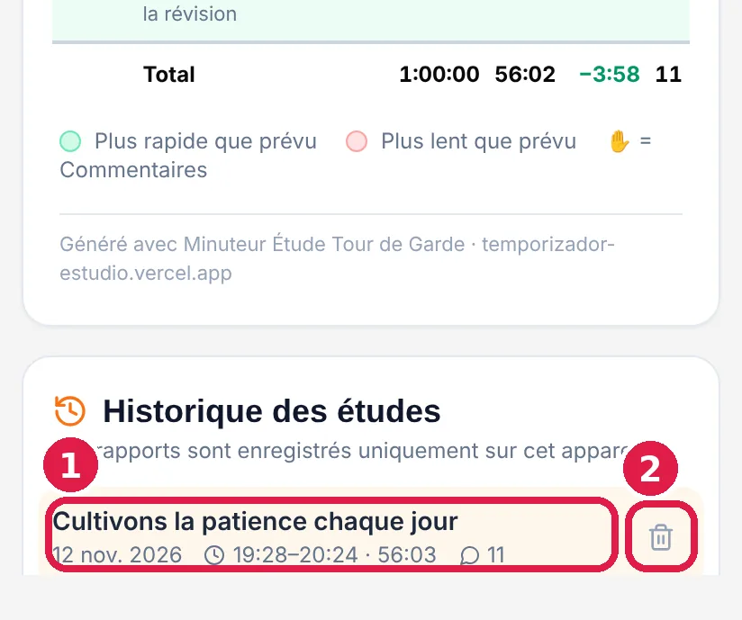
Liste des études enregistrées, sous le rapport.
Appuie sur une étude pour voir son rapport. Elle affiche la date, les heures, la durée et les commentaires.
Corbeille : pour supprimer un rapport. Appuie une fois, puis confirme avec « Supprimer ? ».
Les rapports sont enregistrés uniquement sur cet appareil, jamais sur Internet. Jusqu’à 100 études sont conservées. Si tu effaces les données du navigateur ou de l’application, l’historique est perdu.
Tu peux aussi ouvrir l’historique avec le lien « Historique des études » en bas de l’écran d’accueil.
Autres options
Sous le programme, tu trouveras aussi les statistiques de temps de chaque paragraphe.
Avec le bouton exporter⬇ en haut, tu peux enregistrer le programme comme image ou PDF.
Pour préparer une autre étude, appuie sur recommencer↻.
16Questions fréquentes
Puis-je conduire en lisant les paragraphes et les questions dans l’application ?
Non. L’application les affiche uniquement pour calculer les temps. Pour conduire, utilise toujours JW Library ou La Tour de Garde imprimée.
Pourquoi La Tour de Garde a-t-elle été téléchargée dans une autre langue ?
La revue est téléchargée dans la langue de l’application. Change la langue avec le bouton du globe et touche de nouveau « Télécharger la revue sur jw.org ».
Elle dit qu’elle ne reconnaît pas le format de l’article.
Utilise le PDF officiel de La Tour de Garde, édition d’étude, téléchargé sur jw.org (le bouton « Télécharger la revue sur jw.org » le fait pour toi). Les PDF scannés ou faits à partir de captures d’écran ne peuvent pas être lus.
Elle ne trouve pas l’article de la semaine dans la revue.
Vérifie que la semaine choisie correspond bien à ce numéro de la revue. Sinon, l’application affiche l’article le plus proche et te laisse choisir une autre semaine.
Ai-je besoin d’internet pendant l’étude ?
Seulement pour télécharger la revue. Une fois l’article chargé, le minuteur fonctionne hors connexion.
Je suis arrivé en retard ou j’ai commencé en retard : que faire ?
Ouvre le paragraphe où vous en êtes et touche « Commencer ici ». L’application répartira le temps restant.
Le discours public s’est terminé en retard.
Avant de commencer, appuie sur « Changer l’heure de fin » et indique l’heure à laquelle l’étude doit se terminer pour que la réunion finisse à l’heure. L’application raccourcit tout pour finir à cette heure-là. Cette option ne fait que raccourcir l’étude : elle ne l’allonge jamais.
Les alertes ne sonnent pas.
Vérifie dans Réglages → Alertes qu’elles sont activées, touche « Tester le son » et assure-toi que le téléphone n’est pas en mode silencieux.
Quelles données l’application enregistre-t-elle ?
Seulement tes réglages et les revues que tu choisis de garder, et toujours sur ton appareil. Il n’y a pas de compte et aucune donnée n’est envoyée à un serveur. Plus d’informations dans la politique de confidentialité.
Où puis-je voir les études des autres semaines ?
Dans l’historique des études : appuie sur « Historique des études » à la fin d’une étude, ou utilise le lien en bas de l’écran d’accueil.
Puis-je supprimer un rapport ?
Oui. Dans l’historique, appuie sur la corbeille à côté de l’étude, puis confirme avec « Supprimer ? ».
Pourquoi la conclusion a-t-elle duré plus longtemps que prévu ?
S’il reste du temps après la révision, la conclusion prend ce temps pour finir à l’heure. Le rapport l’indique sous « Conclusion ».